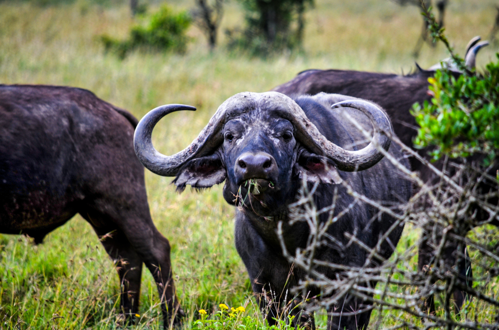

Babouin
Race: Papio

Le babouin vit dans les savanes et les forêts d'Afrique.
état animal: bon
nourriture: banane
quantité: 3kg
passage véto: 25/06
Buffle
Race: Syncerus caffer
Le buffle se trouve dans les savanes et les marécages.
état animal: correcte
nourriture: herbe/graminées
quantité:10kg
passage véto: 25/06
Éléphant
Race: Loxodonta africana

L'éléphant se trouve dans les savanes et les forêts.
état animal: inquiétant
nourriture: herbe
quantité: 100kg
passage véto:26/26
Girafe
Race: Giraffa camelopardalis

La girafe vit dans les savanes et les zones boisées.
état animal: correcte
nourriture: feuilles
quantité: 60kg
passage véto: 26/06
Guépard
Race: Acinonyx jubatus

Le guépard habite les savanes et les prairies.
état animal: faible
nourriture: viande bovine
quantité:4kg
passage véto:26/06
Lion
Race: Panthera leo

Le lion vit principalement dans les savanes et les prairies.
état animal: correcte
nourriture: viande
quantité: 4kg
passage véto:01/07
Onyx
Race: Onyx gazella

L'onyx se trouve dans les déserts et les savanes.
état animal: correcte
nourriture: herbe/feuille/fruit
quantité: 2kg
passage véto: 26/06
Rhinocéros
Race: Rhinocerotidae

Le rhinocéros vit dans les savanes et les forêts tropicales.
état animal: très correcte
nourriture:herbe/feuille
quantité:50kg/
passage véto:01/07